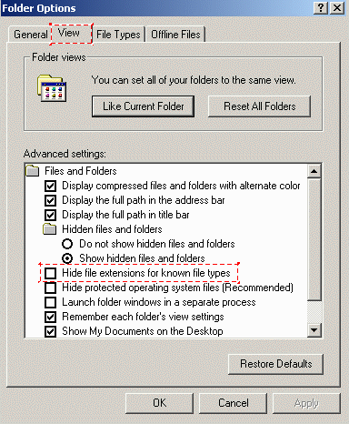
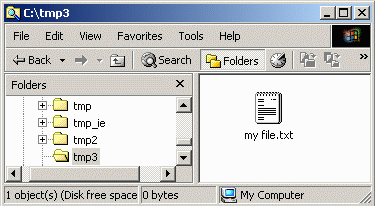
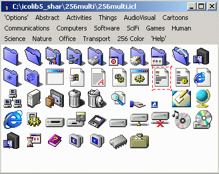
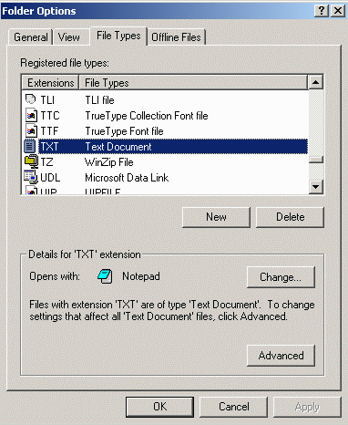
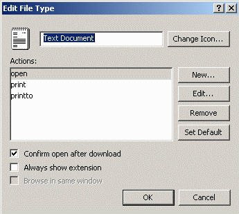
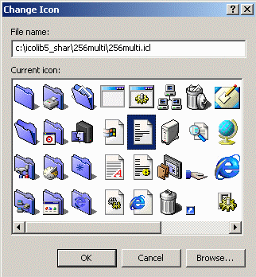
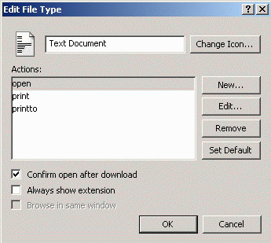
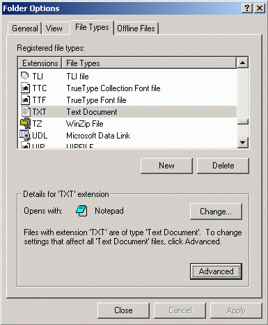
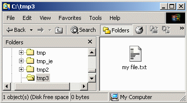
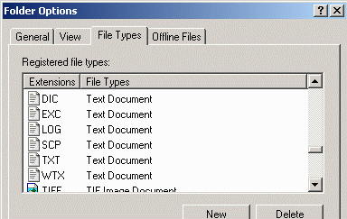

Changing Desktop Icons
Top
Drives
Folders
Files
Shortcuts
System
Files
You can change the icon for groups of files with the same extension by
following these steps.
- Determine the file extension for which you want to associate a new
icon. If you can't see the file extensions, you can make them visible by
selecting the Tools then Folder Options menu for Windows
Explorer. In the popup window, chose the View tab and disable the
Hide file extensions for known file types option. Click OK.

- As an example, start with a common extension such as .txt which
normally has the icon shown below.

- Let's change the .txt icon to look like the 18th icon in this
Icon Library category. The desired icon is highlighted. There is no need
to extract and save this icon, since it can be accessed directly from
within the 256multi.icl file.

- Once again, select the Tools then Folder Options menu
for Windows Explorer. In the popup window, chose the File Types
tab and scroll down to and highlight the TXT Extension. Click on
the Advanced button.

- Click on the Change Icon... button.

- Into the File name: field, enter the path of the ICL file
containing the icon to be used. The pathname for this example is
C:\icolib5_shar\256multi\256multi.icl. Highlight the icon to be used
and click on the OK button, or just double click on the icon itself.

- The new icon is now associated with the .txt extension. Click on
the OK button.

- Note that the icon has changed next to the TXT extension in the
Folder Options window. Click on the Close button.

- The new icon is now displayed with the my file.txt file, and all other
files with a .txt extension on your system.

- A side effect of this procedure is that all extensions with the
File Type of Text Document will also have their icon changed as
shown here. The only methods to overcome this problem is to delete any file
types to be changed and re-create them, or by editing the Windows Registry.
Both of these procedures are beyond the scope of this document.

- You can now try changing the icons for some of your
Shortcuts.